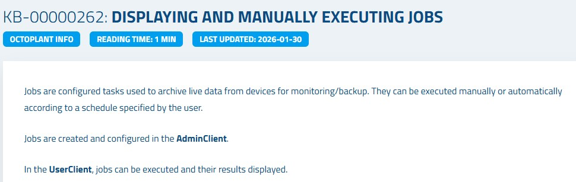

Create Jobs – Automated Backup Configuration
Jobs are the heart of Octoplant's automated backup system. A job defines how, when, and from which device Octoplant automatically reads and archives program data. This chapter walks through creating a component, then configuring a full job with schedule, save policy, compare policy, and email notifications.
Prerequisite: Create and Check-In a Component
Before creating a job, the target component must exist in Octoplant and be checked into the server.
S7_300_Line1.Creating a Job in the AdminClient
Jobs are created and configured in the AdminClient, not the UserClient.
Configuring the Job
With the job created, configure its settings to define how it behaves.
Daily_Backup_S7_300_Line1).192.168.1.100).Configuring the Schedule
The schedule defines when the job runs automatically.
Configuring Save and Compare Policies
These policies control what is saved and what is compared after each job execution.
• Server version ↔ Backup: Compares the current server version with the newly created backup
• Previous backup ↔ Backup: Compares the last two backups to detect changes on the device
Configuring Email Notifications
Octoplant can automatically send email reports after job execution.
• Job specific: Sends an email about this specific job
• Daily: Sends a daily summary email about all configured jobs

Summary
| Action | Where / How | Result |
|---|---|---|
| Create Component | UserClient → New component → Check-In | Component available for job assignment |
| Create Job | AdminClient → Jobs → Drag component | Job created for component |
| Configure Job | Job settings → Name, Upload type, IP address | Job parameters defined |
| Set Schedule | Schedule field → Choose frequency and time | Automatic execution time set |
| Save Policy | Always save backup | Backup created on every execution |
| Compare Policy | Server version ↔ Backup + Prev. backup ↔ Backup | Differences detected automatically |
| Email Notifications | Global job settings → Select users | Automatic reports sent after execution |